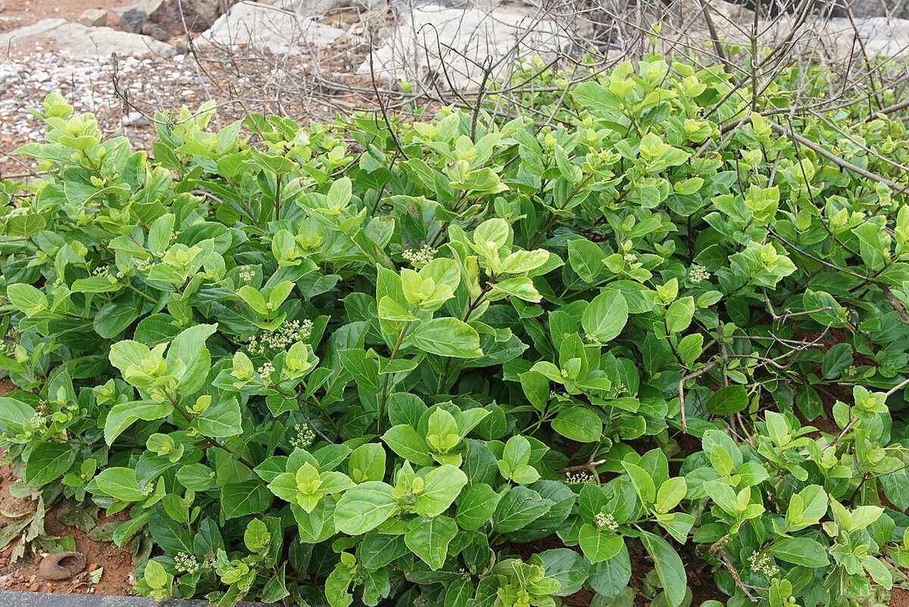

Plant Library › Agnimanth
Agnimanth
Premna integrifolia L.
NCISM 97 · No. 40
Large shrub or small tree with woody, branched habit. The supplied textbook records yellowish, lenticellate bark; simple broadly elliptic leaves; terminal pubescent paniculate corymbose cymes; small greenish-yellow flowers with disagreeable odour; and small pear-shaped fruits.

Verified study data
- Sanskrit name
- अग्निमन्थ
- Botanical name
- Premna integrifolia L.
- Family
- Lamiaceae
- English name
- Wind killer
- Habit
- Large shrub or small tree, reaching about 9 m in height.
- Description
- Large shrub or small tree with woody, branched habit. The supplied textbook records yellowish, lenticellate bark; simple broadly elliptic leaves; terminal pubescent paniculate corymbose cymes; small greenish-yellow flowers with disagreeable odour; and small pear-shaped fruits.
- Rasa
- Katu, Tikta, Kashaya, Madhura
- Guna
- Laghu, Ruksha
- Virya
- Ushna
- Vipaka
- Katu
- Useful part
- Mula (root), Mula twak (root bark)
- Indications
- Shwayathu/Shotha, Pandu, Agnimandya, Vibandha, Jwara, Arshas, Adhmana
- Dose
- Kashaya 50–100 mL; Swarasa 10–20 mL; Churna 1–3 g (as shown in the supplied textbook page).
- Anupana
- Not available in verified record
- Precautions
- Use textbook doses as educational reference and verify current pharmacopoeial/clinical guidance before use.
- Contraindications
- Use cautiously in Pitta-predominant states, Raktapitta and burning sensations because of its Ushna virya; avoid unsupervised use in pregnancy owing to limited safety data.
- Therapeutic actions
- Shothaghna, Agnivardhaka, Vibandhahara, Jwarahara, Kapha-Vata shamaka
- Quick revision
- Agnimantha — Premna integrifolia L.; root/root bark; Katu-Tikta-Kashaya-Madhura; Laghu-Ruksha; Ushna virya; Katu vipaka; Shothaghna and Dashamoola drug.
- Shloka / classical text
- अग्निमन्थः श्वयथुनुद्वीर्योष्णः कफवातहा। पाण्डुनुत् कटुकस्तिक्तस्तुवरो मधुरोऽग्निदः॥
- Nighantu references
- Dhanvantari Nighantu: Agnimantha (Tarkari), Nadeyi, Kshudragnimantha, Kaiyyadeva Nighantu: Agnimantha, Tarkari, Raja Nighantu: Agnimantha / Premna integrifolia treatment
- Samhita references
- Su. Chi. 11/9 — Agnimantha kashaya described for Vasameha, Cha. Chi. 14/45 — Agnimantha, Shigru and Ashmantaka leaf decoction used as Avagaha in Arshas, Su. Chi. 22/51 — passage concerning Agnimantha and Karanja in Shitapitta/Urticaria, as shown on the supplied page, Cha. Chi. 21/125 — passage concerning Granthi Visarpa, as shown on the supplied page
Important formulations
- Dashamularishta — Aruchi, Shula, Shwasa
- Dashamula kwatha — Jwara, Kasa, Shwasa
- Dhanvantara ghrita — Kushtha, Prameha, Shotha
- Narayana taila — Vatavyadhi, Prakupitavata
- Indukanta ghrita — Vatavyadhi, Kshaya
- Prathama Brahmarasayana — Ayurvardhaka
- Agurvadya Taila — Shitajwara
- Baladi lepa — Visarpa
Academic trust & review
This page is a static, crawlable rendering of the DravyaGuna 97 database record. It does not invent missing fields.
Reviewer attribution is shown only when a named reviewer is actually recorded in the project data. See the Sources & Review page for the verification framework and source policy.
Continue to full dossier
The interactive dossier contains the full image gallery, detailed textbook notes, MCQs and revision tools.
Sources recorded for this entry
- NCISM II BAMS Dravyaguna Vigyan curriculum — source
- CCRAS medicinal plant research resources — source
- TDU Indian Medicinal Plants Database — source
- TDU Indian Medicinal Plants Database — Ayurvedic identity and Shlokas — source
- Amidha Ayurveda Herb Database v2.0 — source
- Wikimedia Commons — source
- Dravyaguna Vijnana — Agnimantha chapter, supplied pages 14–20
- Kew Plants of the World Online — Premna integrifolia — source
- Kew Medicinal Plant Names Services — Premna serratifolia — source